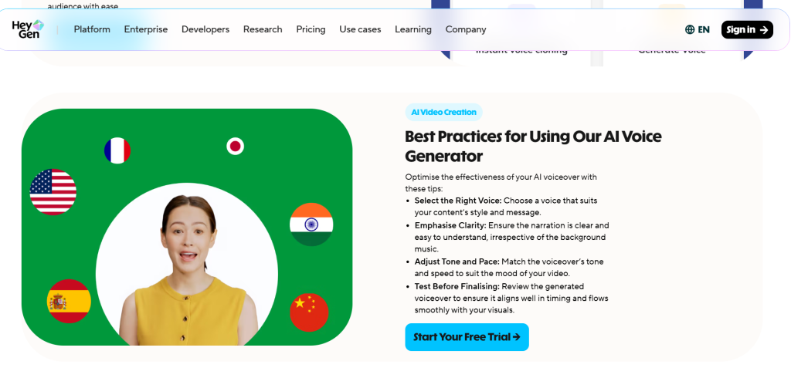
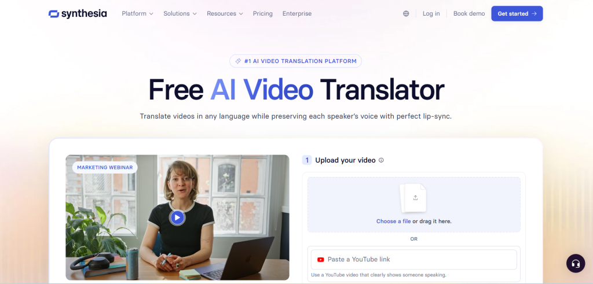
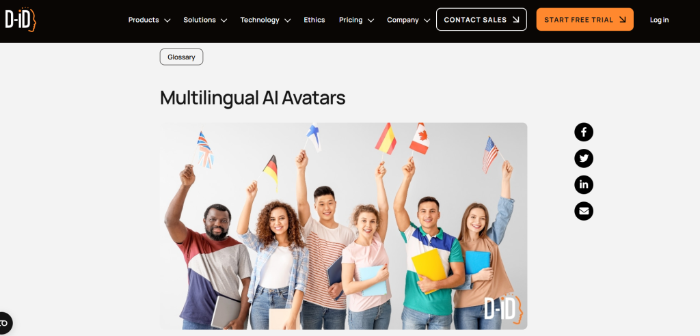
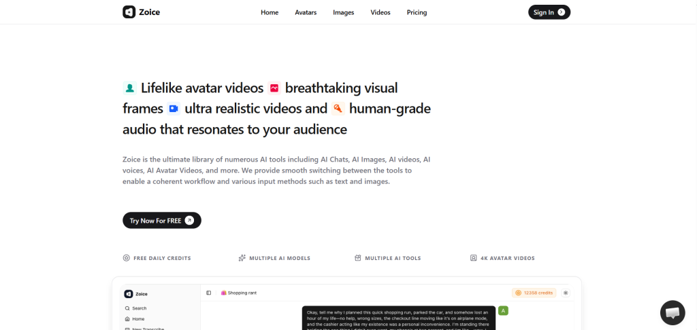
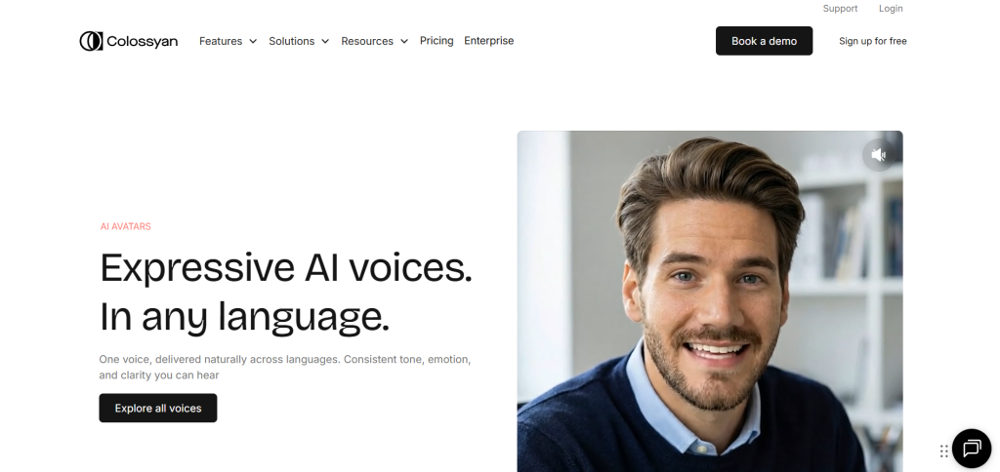
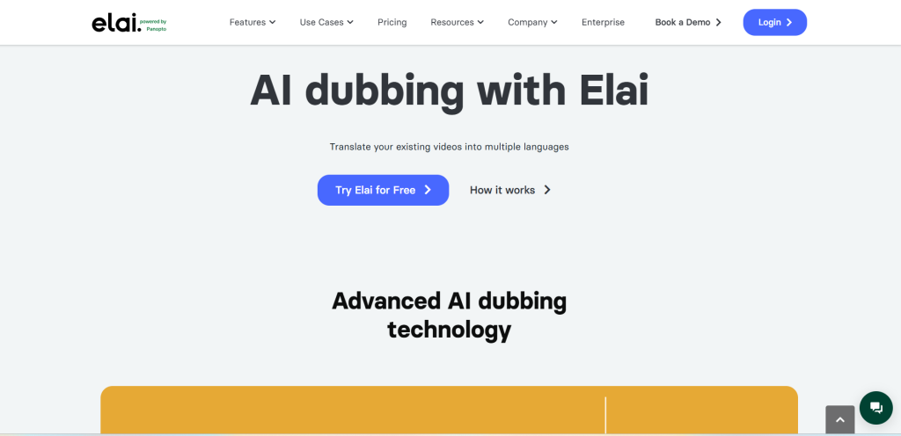

In a world where video content dominates global communication, creating engaging videos in multiple languages used to mean expensive studios, voice actors, and endless post-production. Today, AI avatar tools have changed everything. These platforms generate realistic digital presenters that speak naturally in dozens—or even hundreds—of languages, complete with accurate lip-sync, expressive gestures, and professional voiceovers.
Whether you're a marketer localizing campaigns, an educator building global courses, a YouTuber expanding your reach, or a business creating training videos, these tools save time and costs while maintaining high quality. This guide explores the top 11 AI avatar tools for multilingual voiceovers, highlighting their standout features, strengths, and ideal use cases.
Why Multilingual AI Avatars Matter Now?
Global audiences expect content in their native language. AI avatars deliver consistent branding across regions without re-recording. Modern tools offer natural-sounding voices, cultural nuance in translations, and seamless lip synchronization, making videos feel authentic rather than robotic. Many also support voice cloning, so your brand voice stays consistent worldwide.
1. HeyGen – The Expressive Powerhouse for Marketing

HeyGen stands out for its highly expressive avatars and robust translation capabilities. It supports over 175 languages and dialects with precise lip-sync and voice cloning.
Users can create custom digital twins from short videos or use stock avatars. The platform excels at turning one video into multiple localized versions quickly. Marketers love its templates for ads, explainers, and social content. Fast rendering and automation features make it ideal for high-volume production.
Visit HeyGen to explore its features.
2. Synthesia – Enterprise Favorite for Professional Content

Synthesia pioneered AI avatar videos for business use. It offers a large library of realistic avatars and supports 140+ languages, making it perfect for corporate training, onboarding, and internal communications.
Teams appreciate its template library, SCORM export for LMS integration, and strong compliance features. While it may feel more structured than creative tools, its reliability and brand consistency shine in professional settings.
Check it out at Synthesia.
3. D-ID – Quick Talking Heads from Photos

D-ID specializes in animating static images or photos into lifelike talking avatars. It supports multiple languages and works great for personalized messages, social content, or interactive agents.
Its strength lies in speed and simplicity—upload a photo, add text or audio, and generate a video fast. It's particularly useful for creative campaigns or real-time applications.
Learn more on D-ID.
4. Zoice – Balanced All-Rounder for Everyday Creators

Zoice frequently ranks high for its combination of realism, ease of use, and affordability. It delivers natural lip-sync, stable facial expressions, and strong multilingual performance across dozens of languages.
Creators and small teams praise its clean interface and reliable output for YouTube videos, marketing ads, and courses. It strikes an excellent balance without overwhelming complexity.
Try it at Zoice.
5. Colossyan – Training and Interactive Learning Specialist

Colossyan focuses on e-learning with interactive scenarios, branching paths, and quizzes. It supports solid multilingual capabilities and SCORM export, making it valuable for compliance training and education.
Its avatars handle structured content well, with features tailored for workplace learning.
6. Elai.io – Template-Driven Professional Videos

Elai.io offers customizable templates and avatars suited for business presentations and training. It supports 75+ languages and emphasizes structured, professional outputs. Users can transform documents or scripts into full videos efficiently.
7. Hour One – Photorealistic AI Actors
Hour One delivers highly realistic AI video actors with natural movements. It caters to those seeking premium visual quality for storytelling or promotional content, with good multilingual voice support.
8. DeepBrain AI (AI Studios) – Multi-Scene Enterprise Tool
DeepBrain AI Studios supports multi-avatar scenes, gesture control, and extensive language options. It's popular for detailed enterprise presentations and complex video projects.
Comparison Table: Top AI Avatar Tools at a Glance
| Tool | Languages Supported | Best For | Custom Avatars | Pricing Starting | Key Strength |
|---|---|---|---|---|---|
| HeyGen | 175+ | Marketing & Social | Yes | ~$29/mo | Expressive, fast translation |
| Synthesia | 140+ | Corporate Training | Yes | ~$22/mo | Enterprise features |
| D-ID | 100+ | Quick Personalized | Photo-based | Freemium | Speed & simplicity |
| Zoice | Dozens+ | General Creators | Yes | Affordable | Balance & reliability |
| Colossyan | 70+ | E-Learning | Yes | Varies | Interactive scenarios |
| Elai.io | 75+ | Templates & Business | Yes | ~$23/mo | Script-to-video |
| Hour One | Multiple | Photorealistic | Yes | Varies | Visual realism |
| DeepBrain | Extensive | Multi-scene Presentations | Yes | Varies | Gesture control |
(Note: Pricing and exact language counts can vary; check official sites for latest details.)
9. Creatify – UGC-Style Ad Creator
Creatify shines for performance marketing with realistic UGC-style avatars. It supports multilingual needs and includes analytics for A/B testing campaigns.
10. Rask AI – Dubbing and Localization Expert
Rask AI excels at translating existing videos with AI avatars or dubbing. It pairs well with other tools for full localization workflows across many languages.
11. Additional Notables: Leadde, Argil & InVideo AI
Tools like Leadde focus on document-to-video workflows with broad language support, while Argil emphasizes creative marketing autonomy. InVideo AI offers versatile avatar integration for broader video editing needs.
Key Factors to Consider When Choosing a Tool
- Language Coverage & Quality: Prioritize accurate pronunciation and cultural adaptation.
- Avatar Realism & Customization: Look for natural expressions and custom options.
- Ease of Use: Intuitive interfaces speed up production.
- Integration & Export: Check LMS compatibility or API access.
- Pricing: Balance features with budget—many offer free trials.
- Use Case Fit: Marketing favors expressive tools; training needs structure.
Community discussions highlight real-user experiences. On Reddit, creators in r/dropshipping and similar subs share successes with tools supporting 30+ languages for global sales videos. One popular thread discusses options like VibePeak for multi-language avatar generation.
For inspiration, check this YouTube review of AI Studios: https://www.youtube.com/watch?v=60HloMIaEVA
Real-World Impact and Tips
Businesses using these tools report cutting production time by 80%+ and reaching new markets faster. Start with a script in your primary language, generate a base video, then localize. Test lip-sync in target languages and refine prompts for tone. Combine with good lighting references for custom avatars.
Always review outputs for brand alignment and cultural sensitivity.
Conclusion: The Future of Global Video Is Here
AI avatar tools for multilingual voiceovers have democratized high-quality video production. From HeyGen's creativity to Synthesia's professionalism and Zoice's balanced approach, there's a perfect fit for every need. Experiment with a couple of platforms using their trials to see what resonates with your workflow.
As these technologies evolve, expect even more realistic interactions and broader accessibility. The barrier to creating compelling global content has never been lower—now is the time to embrace it and connect with audiences worldwide in their own languages.
Your next viral video or impactful training module could be just a few clicks away.